From Terran Boylan's original TunnelVision technique to agentic filmmaking research: the origin, hypotheses, experiments, failures, and architecture.
Working principleA good next frame should preserve the world’s rules while changing the viewer’s question.
ORIGIN + PROBLEM
Terran's TunnelVision
TunnelVision originated with filmmaker Terran Boylan, who developed the concept and manual filmmaking technique through work for his own YouTube channel and video content. That work predates the Peter Gabriel Digging in the Dirt project. The technique was later adapted for that film, where we used the playful name TunnelTV, an homage to MTV. By iteratively generating successive viewpoints, selecting the next frame, and carrying that image forward as the new visual reference, Terran's original workflow created the feeling of continuously traveling through an imagined environment.
The research documented here extends Terran's original TunnelVision work into an agentic filmmaking system: an AI Director decides where the journey should go, and an AI Cinematographer determines how to move the camera there. The ambition expands from a manually authored sequence into continuous exploration of potentially endless imagined worlds.
Lineage
Original TunnelVision: Terran Boylan's concept and manual technique. TunnelTV: playful DITD-era label for that application's adaptation. This research: agentic extension of Terran's original TunnelVision work.
Generative models are good at: making compelling individual images and clips.
The harder problem is: maintaining a meaningful journey through an imagined world.
TunnelVision explores: direction, continuity, preference learning, and traversability.
Working principleA good next frame should preserve the world's rules while changing the viewer's question.
OBSERVE→PROPOSE→GENERATE→EVALUATE→SELECT→MOVE
The manual experiments below intentionally reproduce this loop by hand. The goal of the coded prototype is to turn those repeated decisions into an agent workflow.
STILL-IMAGE EXPLORATION
Teaching the journey what “forward” means
Using Nano Banana Pro through Runway, each selected frame became the reference for the next generation. Candidate selection was treated as data: spatial progression, aesthetic preference, emergent discoveries, and rejected compositions all shaped the next prompt.
CANONICAL FRAME NOTATION
Only frames selected into the continuing journey receive letters. The starting frame is A; subsequent selected frames are B–H.
Rejected and unselected candidates remain unlettered. Traversal tests can therefore be referenced simply as A → B, B → C, and so on.
START
Starting image
No map, storyboard, destination, mushrooms, chasm, bridge, or giant tree was planned in advance. The experiment began with a single first-person view from beneath the earth.
A
Initial reference image
01
ITERATION INTENT
Cross the threshold
Reference entering this iteration
Reference frame
Prompt
First-person point-of-view shot, continuing forward from inside the earthen root-tunnel through the bright opening on the left and emerging outside into open air. The camera has passed beyond the threshold of the underground passage and now looks straight ahead across the landscape beyond it. The foreground at the very edges of frame still shows the rough lip of the earthen opening - eroded, ochre-and-terracotta soil with a few thin tree roots dangling into frame from the top edge - grounding the shot as a true continuation of the same tunnel exit. Beyond the opening, reveal a sunlit exterior landscape whose geology matches the tunnel's material logic: eroded sedimentary earth banks, exposed root systems from the trees above, and dry compacted soil, now overgrown with the trees whose roots were seen hanging inside. Daylight is bright, slightly cool white-blue, coming from a high sun, in strong contrast to the warm golden-orange interior tones left behind, with the transition of light logically brighter and cooler the further from the tunnel mouth. Natural depth: dappled sunlight filtering through a canopy of trees whose roots plunge into the eroded earth walls, tall grass and undergrowth on the forest floor, a soft haze in the distance. The perspective remains eye-level, first-person, looking forward along the same sightline as if a single continuous walk carried the viewer from underground into daylight.
Exact prompt used in the prototype.
Generated results
REJECTED
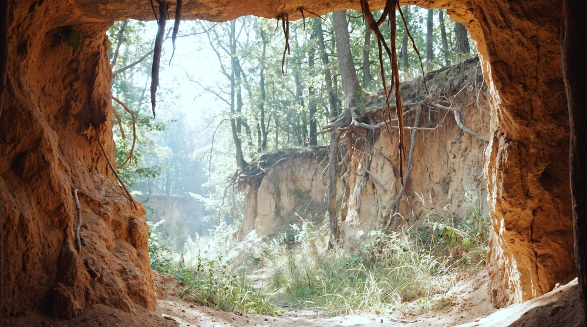
Candidate 1 — rejected intermediate: still at the cave mouth
Result: The camera crossed the threshold, but the cave remained visible The prompt successfully carried the viewer through the opening, but it intentionally left the lip of the cave at the frame edges. That made the next problem obvious: to create a genuinely new location, we needed to move far enough forward that the previous location was completely behind the camera.
PROMPT / LOGIC CHANGE
Next intent: force true spatial advancement. The new prompt explicitly placed the camera roughly 20 feet outside and required the tunnel entrance to be completely out of view, behind the camera.
02
ITERATION INTENT
Force true spatial advancement, then explore the new location
Reference entering this iteration
Reference frame
Prompt
First-person point-of-view shot, standing roughly 20 feet outside the underground root-tunnel, having fully exited it - the tunnel entrance is completely out of view, behind the camera. Looking forward across an exterior landscape that continues the physical and geological logic of the earthen tunnel it emerged from: eroded sedimentary earth banks, thick exposed tree roots plunging from the trees above into the ground, dry compacted ochre-and-terracotta soil transitioning into a natural forest floor with grass and undergrowth. The trees whose roots were seen dangling inside the tunnel now stand fully visible, tall and mature, their root systems clawing into the eroded earth around their bases. Daylight is bright and natural, consistent with the cool white-blue light seen glowing at the tunnel mouth, now filling the whole frame with soft dappled sunlight filtering through the canopy. A gentle haze softens the distance. Eye-level, first-person perspective, camera looking straight ahead, no trace of the tunnel entrance anywhere in frame.
Exact prompt used to create the first fully exterior frame. That successful frame was then used to create three additional variations.
Generated results
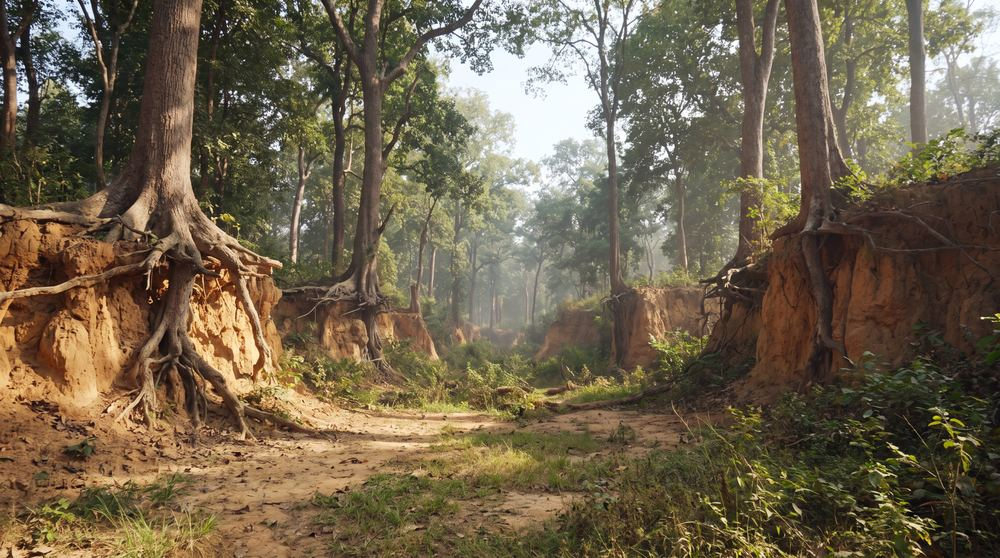
Candidate 1
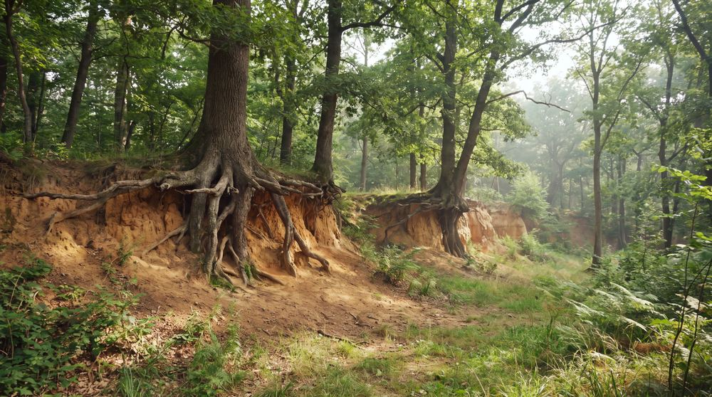
Candidate 2
BCHOSEN
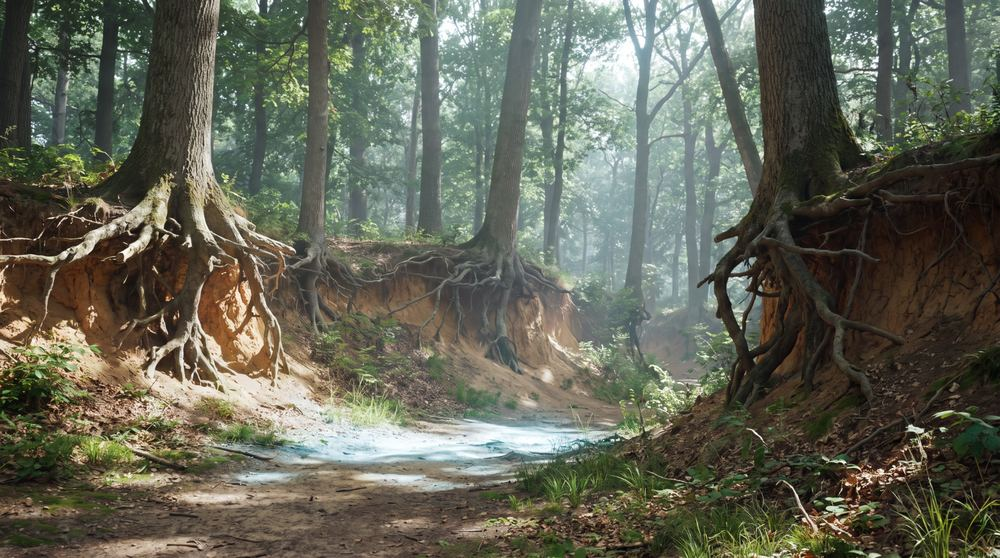
Candidate 3 — Forest ravine with eroded walls and exposed roots
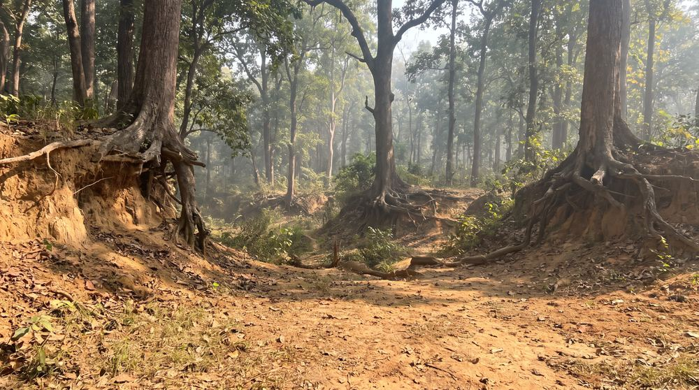
Candidate 4
Selected: Forest ravine with eroded walls and exposed roots The fully exterior frame solved the displacement problem. We then used it as the reference for three additional variations and selected Candidate 3 — the forest ravine with eroded walls and exposed roots — because it preserved the geology of the tunnel while establishing a strong, naturally navigable route deeper into the world.
PROMPT / LOGIC CHANGE
Key criterion established here: a selected frame must represent a meaningfully new camera position, not merely a changed view from the old one. From here, the existing sequence and Candidate 3 selection continue as documented.
03
ITERATION INTENT
Move deeper into the ravine
Reference entering this iteration
Reference frame
Prompt
First-person point-of-view shot, continuing forward 20 to 30 feet along an eroded earthen channel from this exact viewpoint, deeper into the forest environment. The path is enclosed and strongly navigable, carved between steep banks of compacted ochre-terracotta soil, with thick gnarled tree roots breaking through the walls on either side and arching low overhead, some dangling down to partially obscure the upper frame like natural curtains. These root structures frame the journey on the left and right, funneling the eye down the channel. Pronounced depth: the channel curves subtly, so the destination ahead is partially obscured by a cluster of hanging roots and a jut of eroded earth, hinting at what lies beyond without revealing it. The exposed roots retain a slightly uncanny, almost sinewy and vein-like organic quality - thick, twisting, unnervingly deliberate in their shapes - keeping the mood eerie rather than becoming an ordinary scenic forest path. Dappled sunlight filters through the canopy above, creating pockets of light and deep shadow along the channel walls. Eye-level, first-person perspective, camera looking straight down the channel.
Exact prompt used in the prototype.
Generated results
CCHOSEN
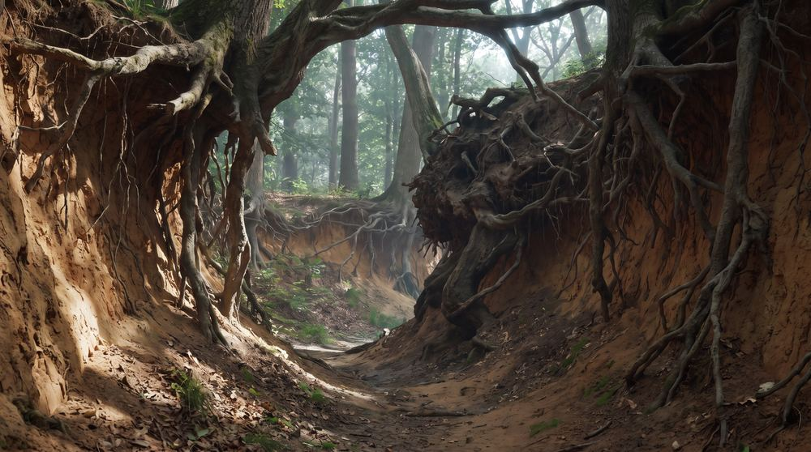
Candidate 1 — Root-lined corridor
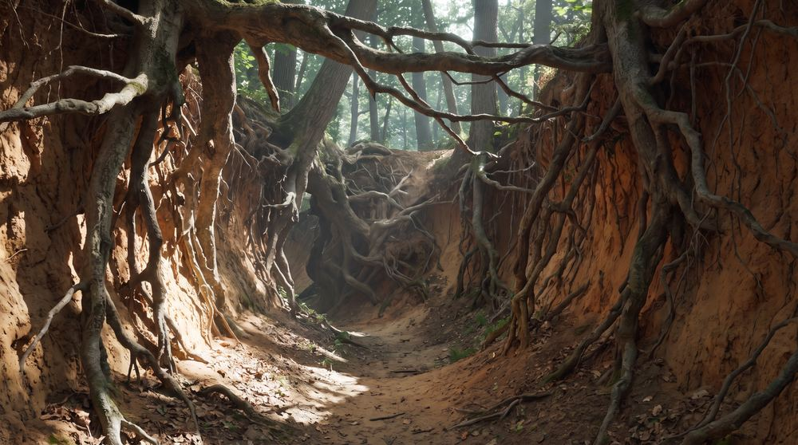
Candidate 2
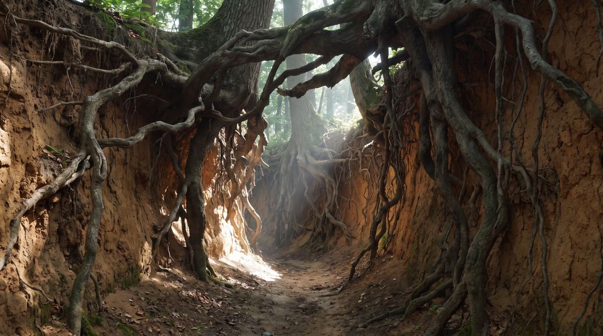
Candidate 3
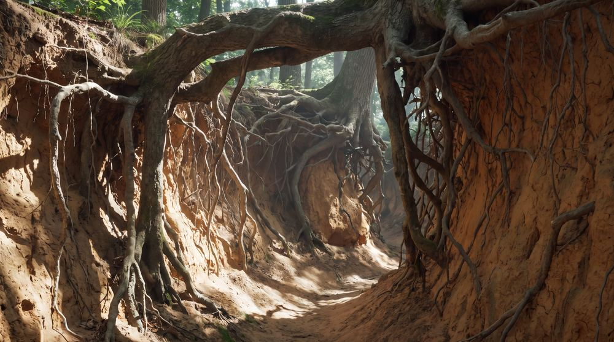
Candidate 4
Selected: Root-lined corridor The route narrowed and the roots became more architectural. It felt like the world was beginning to evolve rather than merely repeat.
MORE LIKE THIS · AESTHETIC SIGNAL
Enclosed, strongly navigable channel; roots framing left and right; pronounced depth; partially obscured destination; sinewy uncanny roots; eerie rather than scenic.
PROMPT EVOLUTION
Still using literal 20–30 ft movement, but now explicitly directing composition, route clarity, occlusion, and the uncanny quality we preferred.
PROMPT / LOGIC CHANGE
The next attempt exposed a problem: distance alone did not reliably force a genuinely new composition.
04
ITERATION INTENT
Failed advancement test
Reference entering this iteration
Reference frame
Prompt
First-person point-of-view shot, having advanced approximately 20 to 30 feet further along the path shown in the reference image, now at a clearly new location deeper into the channel, not a repeat of the reference composition. Maintain physical and visual continuity with the forest, exposed earth, lighting, vegetation and massive root structures established in the reference. The route ahead is clear and inviting, with strong foreground, midground and background depth: in the foreground, thick roots break from the eroded banks; in the midground, the channel narrows and curves; in the background, the destination is partially obscured by a bend and a hanging mass of roots, teasing what lies further on. The exposed roots have evolved subtly into larger, more architectural forms - some arching overhead like ribs or buttresses, others fused together into wall-like lattices - remaining photorealistic and physically plausible while growing more uncanny, as if the earth itself were built rather than merely grown. Dappled, uneven light filters down through gaps in the canopy, catching the ridges of the roots and casting deep shadow into the crevices between them. Eye-level, first-person perspective, camera looking forward along the path.
Exact prompt used in the prototype.
Generated results
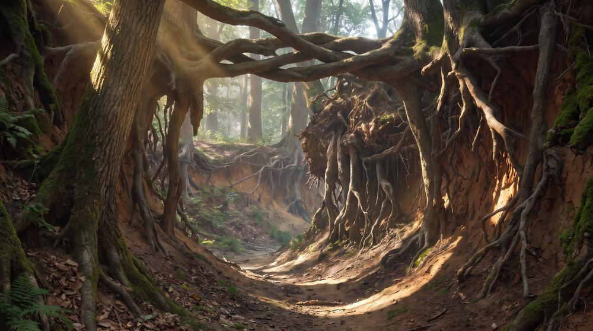
Candidate 1
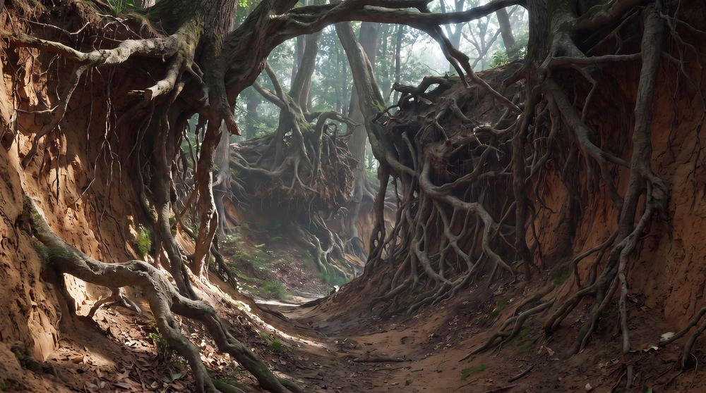
Candidate 2
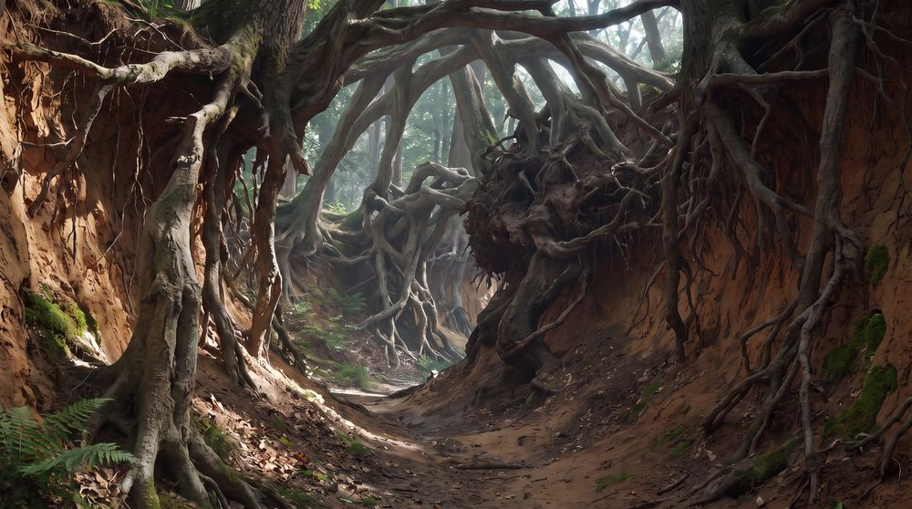
Candidate 3
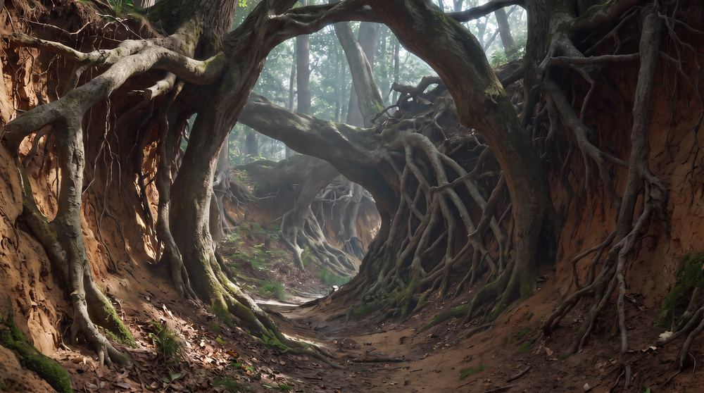
Candidate 4
Decision: No canonical frame selected The images felt too much like variations of the same location instead of a journey advancing through space.
MORE LIKE THIS · AESTHETIC SIGNAL
Larger, more architectural roots; rib / buttress / lattice shapes; deeper shadows; stronger foreground–midground–background staging; nature beginning to feel built.
PROMPT EVOLUTION
Explicitly demand a clearly new location, preserve continuity, and push the chosen root aesthetic farther while remaining physically plausible.
PROMPT / LOGIC CHANGE
Key discovery: stop treating movement as a metric. We switched to a semantic goal — a new camera position — and explicitly told the model the old foreground was now behind the camera.
05
ITERATION INTENT
Force a genuinely new camera position
Reference entering this iteration
Reference frame
Prompt
First-person point-of-view shot from a new camera position, approximately 30 feet farther forward along the path than the reference image, having walked underneath and beyond the large foreground root arch shown in the reference - that arch and all of its foreground structures are now completely behind the camera and out of frame. This is a new location in the ongoing journey, not a variation of the reference composition. Newly revealed terrain stretches ahead: the eroded earthen channel opens into a wider hollow, flanked by fresh exposed-root formations climbing the banks, with a fallen, moss-covered root spanning partway across the path at midground height. Farther ahead, the channel bends around an outcrop of layered sedimentary rock, partially obscuring what lies beyond. The same continuous forest environment, geology, exposed-root ecosystem, and photorealistic style carry through, with dappled natural light filtering down through the canopy, consistent with the established lighting logic. Eye-level, first-person perspective, camera looking forward along the newly revealed path.
Exact prompt used in the prototype.
Generated results
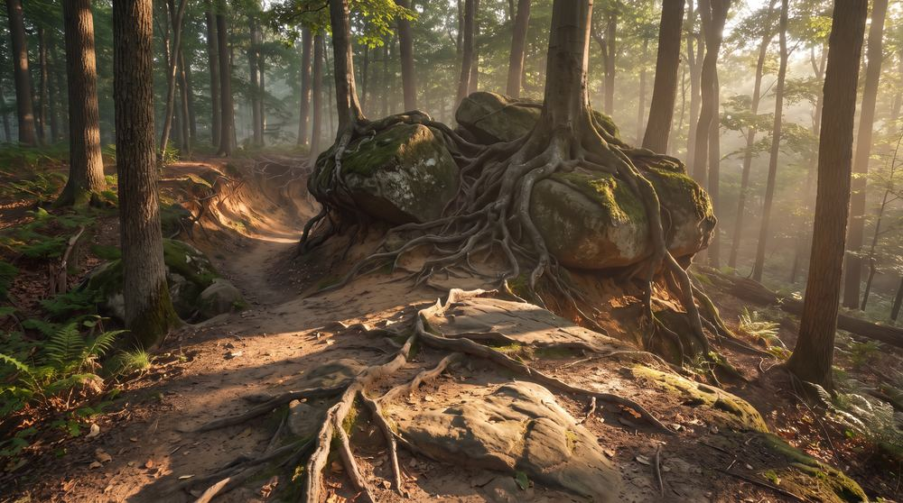
Candidate 1
DCHOSEN
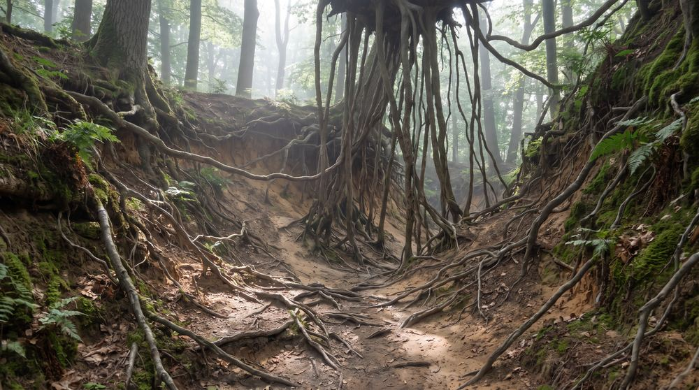
Candidate 2 — Ominous root-filled trench
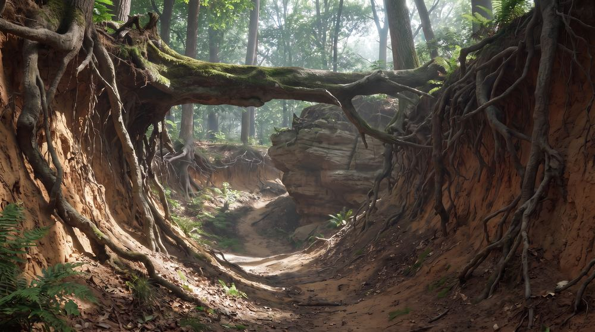
Candidate 3
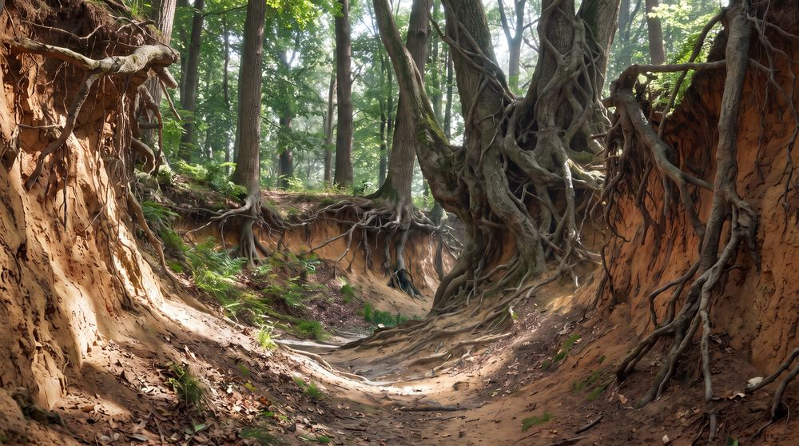
Candidate 4
Selected: Ominous root-filled trench It finally felt like a new place. The image was stranger, darker, and more compelling without breaking continuity.
MORE LIKE THIS · AESTHETIC SIGNAL
Newly revealed terrain, wider hollow, fresh root formations, partial obstructions, bends and outcrops that tease the next space rather than fully reveal it.
PROMPT EVOLUTION
The previous foreground root arch is explicitly behind the camera and out of frame — a key move from generating a variation toward traversing space.
PROMPT / LOGIC CHANGE
We replaced 'new camera position' with 'next meaningful camera position' so advancement could be driven by visual interest, not just displacement.
06
ITERATION INTENT
Let the environment choose the next meaningful beat
Reference entering this iteration
Reference frame
Prompt
First-person point-of-view shot from the next meaningful camera position reached by continuing forward along the navigable route in the reference image, having physically traveled beyond the current foreground into newly revealed space - this is the next location in a continuous journey, not a variation of the reference composition. Preserve strong continuity with the same forest, terrain, exposed-root ecosystem, and lighting logic. The mood has grown more ominous and uncanny: the path narrows between walls of roots that have thickened and darkened, some twisting into shapes that almost resemble hunched figures or skeletal ribs. A new discovery appears ahead without breaking the established world: a wide, dark fissure splits the ground diagonally across the path, its edges lined with pale, exposed root fibers dangling into the crack, forcing a narrow ledge of solid earth to walk along. Beyond the fissure, the path continues into deeper shadow where the roots grow denser, raising the question of what lies further ahead. Dappled light dims noticeably compared to before, with longer shadows and a cooler tone. Eye-level, first-person perspective, camera looking forward along the path, photorealistic.
Exact prompt used in the prototype.
Generated results
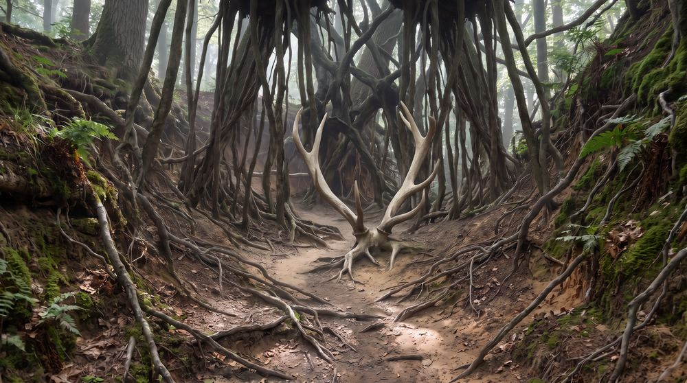
Candidate 1
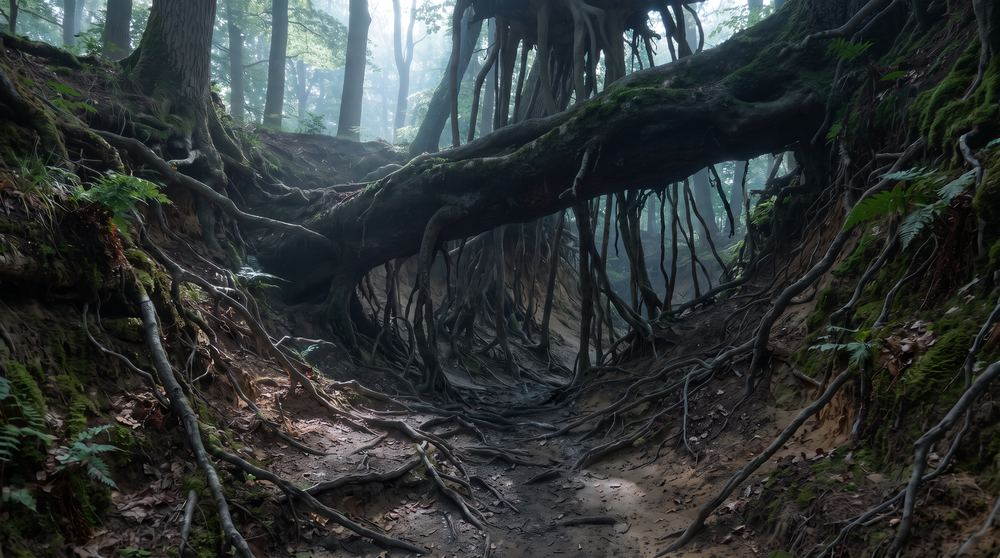
Candidate 2
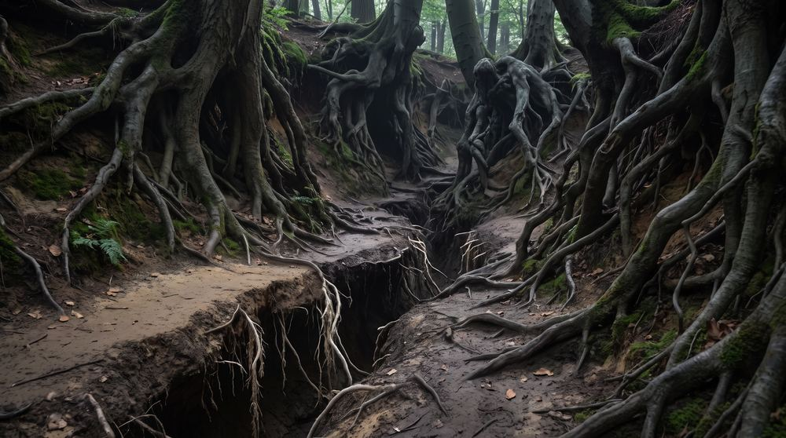
Candidate 3
ECHOSEN
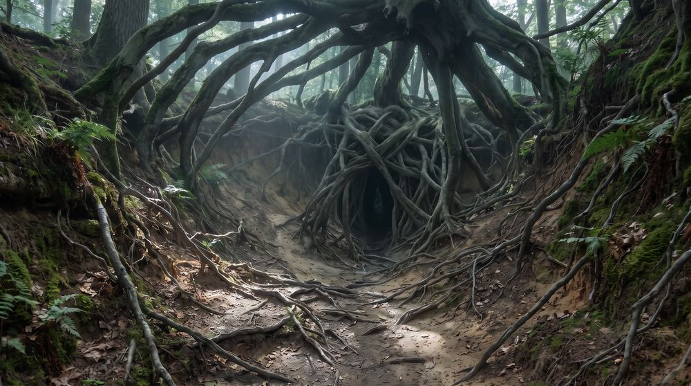
Candidate 4 — Dark root opening / threshold
Selected: Dark root opening / threshold The roots formed an organic portal-like opening that created an irresistible next question: what is beyond it?
MORE LIKE THIS · AESTHETIC SIGNAL
More ominous and uncanny; darker, thicker root walls; almost-figurative forms; a consequential discovery; cooler, dimmer light; a route that creates tension.
PROMPT EVOLUTION
Shift from distance as the main control to the next meaningful camera position. The prompt asks for a discovery that changes the viewer’s question.
PROMPT / LOGIC CHANGE
Instead of inventing what was beyond the opening, the next prompt simply asked the model to travel through the threshold and reveal what naturally exists there.
07
ITERATION INTENT
Cross the threshold
Reference entering this iteration
Reference frame
Prompt
First-person point-of-view shot from the next meaningful camera position, having physically traveled through and beyond the dark root opening shown in the reference image - that opening and all of its foreground are now completely behind the camera and must not be reproduced in this frame. This is a new location in a continuous journey, not a variation of the reference composition. Preserve continuity with the same forest ecosystem, terrain, massive exposed-root structures, photorealistic style, and ominous, uncanny atmosphere. Beyond the threshold, the ground opens into a wide, sunken hollow where countless roots descend from an unseen ceiling of earth like a curtain of hanging vines, thinning toward the center to reveal a pale, diffused light source somewhere beyond, establishing a new route forward. Underfoot, the compacted soil gives way to smooth, water-worn stone, hinting at an old dry streambed. The new discovery: a cluster of strange, calcified root nodules cling to the walls of the hollow, pale and bulbous, unlike anything seen earlier in the journey. The atmosphere remains heavy and dim, with cool, muted light and a lingering sense of depth beyond the visible frame. Eye-level, first-person perspective, camera looking forward into the hollow.
Exact prompt used in the prototype.
Generated results
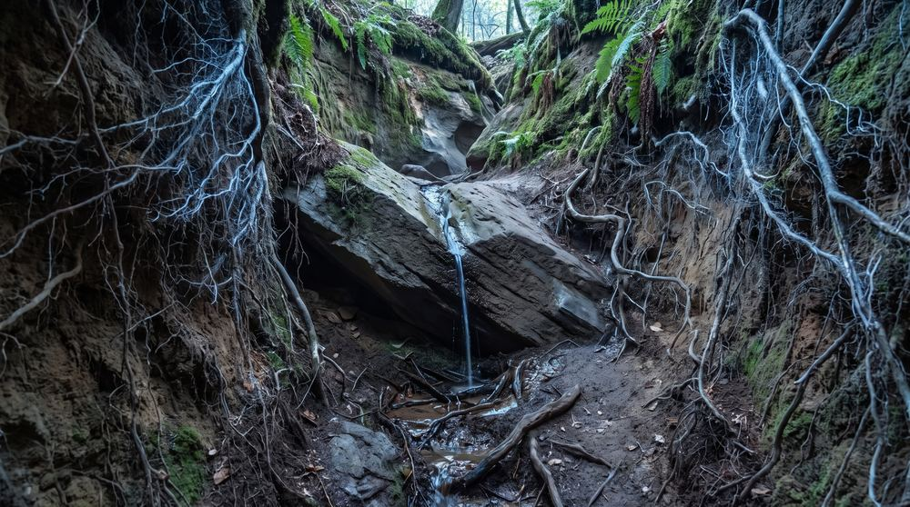
Candidate 1
FCHOSEN
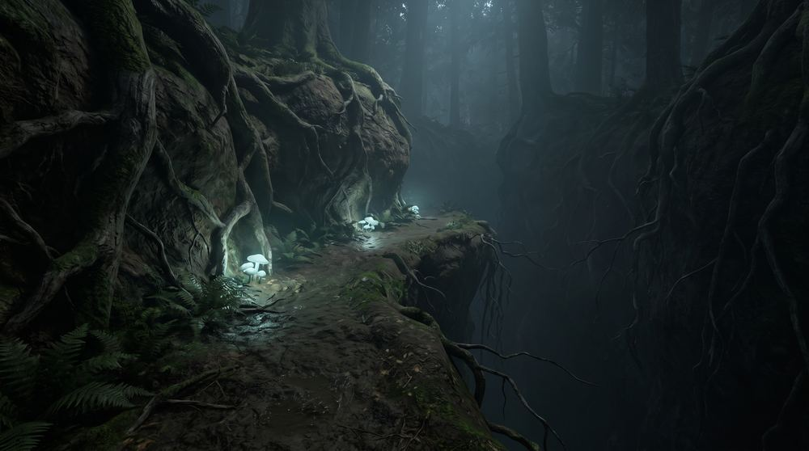
Candidate 2 — Deep chasm with a narrow ledge and glowing mushrooms
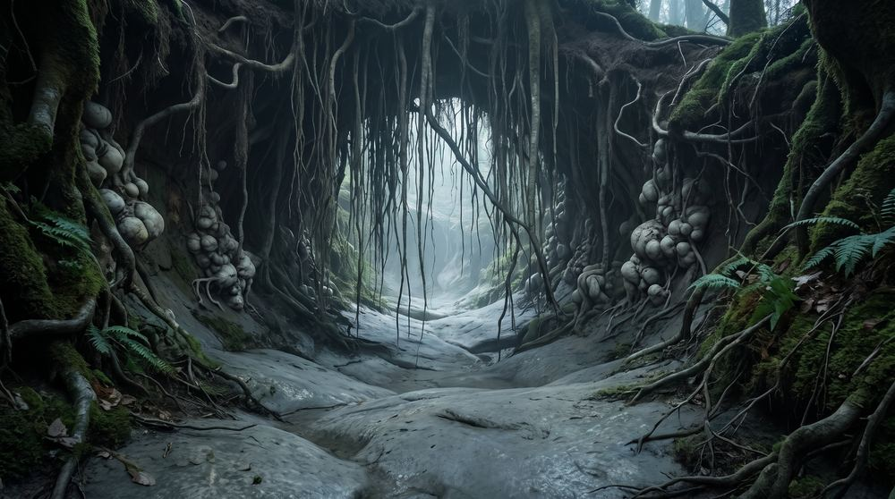
Candidate 3
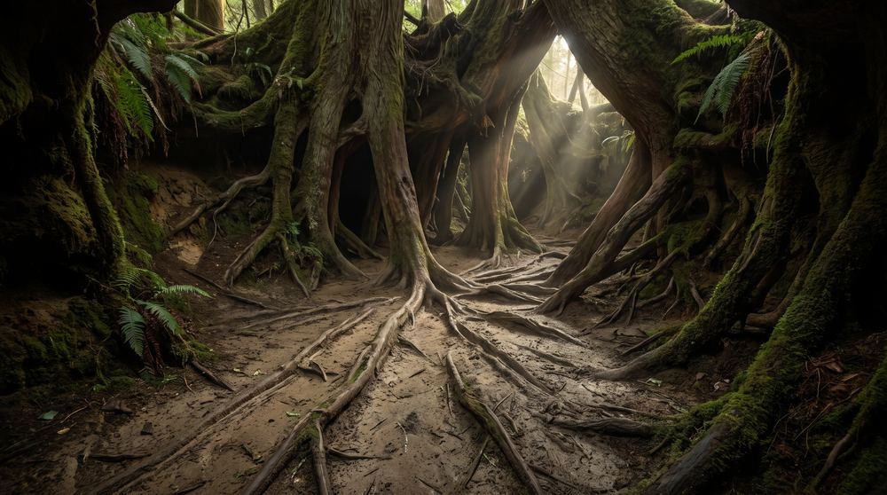
Candidate 4
Selected: Deep chasm with a narrow ledge and glowing mushrooms This was the largest leap in the journey: new scale, danger, darkness, and an unplanned visual breadcrumb — the glowing mushrooms.
MORE LIKE THIS · AESTHETIC SIGNAL
Thresholds and discoveries that feel naturally evolved from the existing root world; stranger scale and atmosphere without arbitrary fantasy additions.
PROMPT EVOLUTION
Let the reference determine what lies beyond the threshold. The text stops predetermining the destination and asks the model to reveal it.
PROMPT / LOGIC CHANGE
For the first time, a newly generated detail became navigation input. The next prompt followed the mushrooms instead of merely saying 'forward'.
08
ITERATION INTENT
Follow an emergent visual breadcrumb
Reference entering this iteration
Reference frame
Prompt
First-person point-of-view shot from the next meaningful camera position, having physically traveled forward along the narrow path beside the deep chasm shown in the reference image, following the route suggested by the small glowing white mushrooms - the current foreground and camera position from the reference are now completely behind the camera and must not be reproduced. This is the next location in a continuous journey, not a variation of the reference composition. Preserve geographic and visual continuity with the same earthen, root-bound environment, photorealistic style, and ominous, uncanny atmosphere. The path along the chasm's edge curves gently inward, and the glowing mushrooms now cluster more thickly in small colonies along fallen roots, marking the way forward with pools of soft white light. Ahead, the chasm narrows and is spanned by a thick, gnarled root forming a natural bridge across the gap, the mushrooms tracing its length as if guiding the way across. Beyond the bridge, the path continues into deeper darkness, raising the question of what lies further ahead. The atmosphere is hushed and heavy, the mushroom glow the only true light source. Eye-level, first-person perspective, camera looking forward toward the root bridge.
Exact prompt used in the prototype.
Generated results
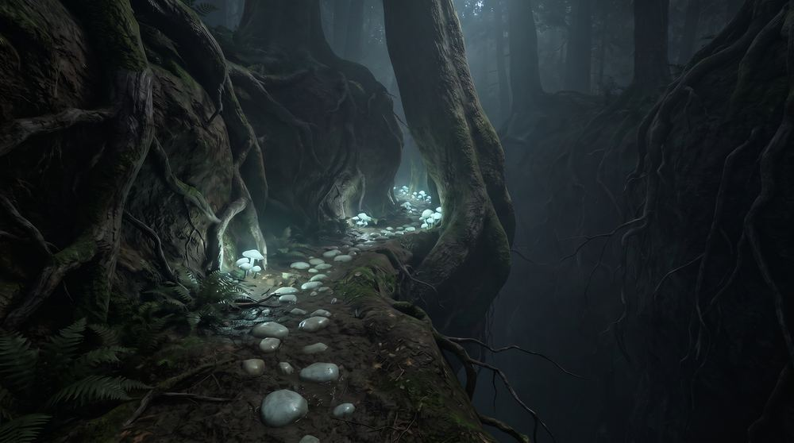
Candidate 1
GCHOSEN
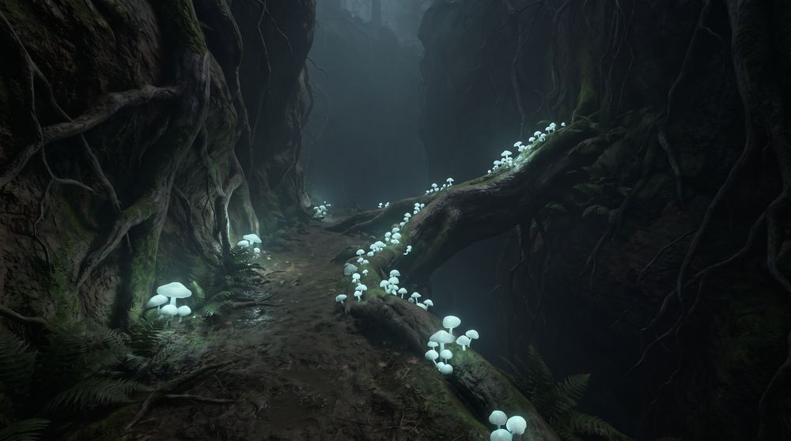
Candidate 2 — Mushroom-covered root spanning the chasm
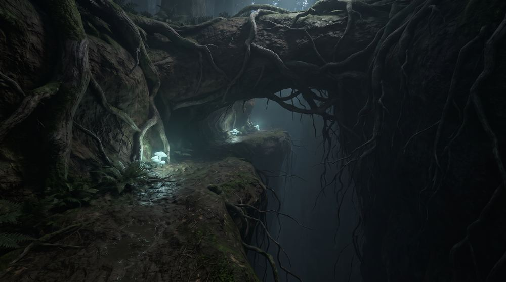
Candidate 3
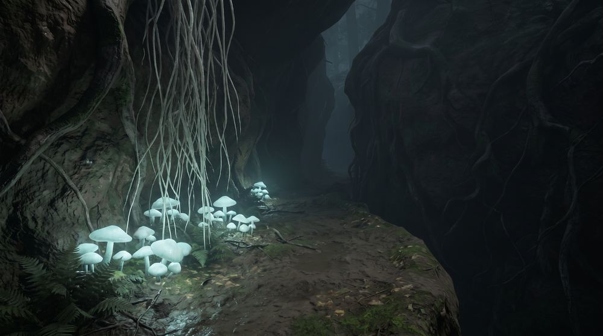
Candidate 4
Selected: Mushroom-covered root spanning the chasm The breadcrumbs became a navigation system. The giant diagonal root created an obvious route across the gap without us asking for a bridge.
MORE LIKE THIS · AESTHETIC SIGNAL
The glowing mushrooms become a recurring visual motif and navigational breadcrumb rather than a one-off decorative detail.
PROMPT EVOLUTION
Follow an affordance discovered by the model itself. A generated visual detail now contributes explicit navigation language to the next prompt.
PROMPT / LOGIC CHANGE
We kept the same prompt template and changed only the scene-specific navigation clause: follow the mushrooms across the massive root.
09
ITERATION INTENT
Let the generated route invent a destination
Reference entering this iteration
Reference frame
Prompt
First-person point-of-view shot from the next meaningful camera position reached by continuing physically forward along the route suggested by the reference image, following the path of the small glowing white mushrooms across the massive root spanning the chasm. The camera has traveled beyond the current foreground into newly revealed space; the current foreground and camera position are now behind us and should not simply be reproduced. Preserve geographic and visual continuity with the same environment while revealing what naturally exists farther along this route and establishing a new navigable view that invites continued forward movement. This must be the next location in a continuous journey, not a variation of the reference image.
Exact prompt structure used for the final exploration round.
Generated results
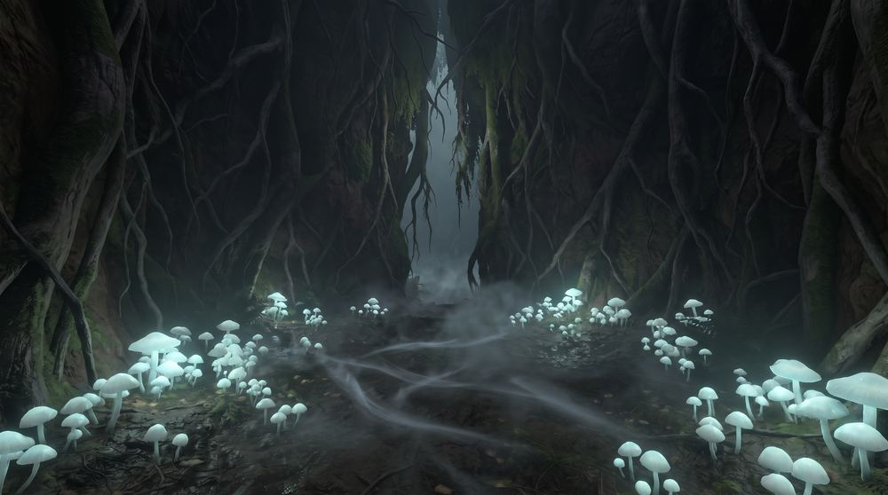
Candidate 1
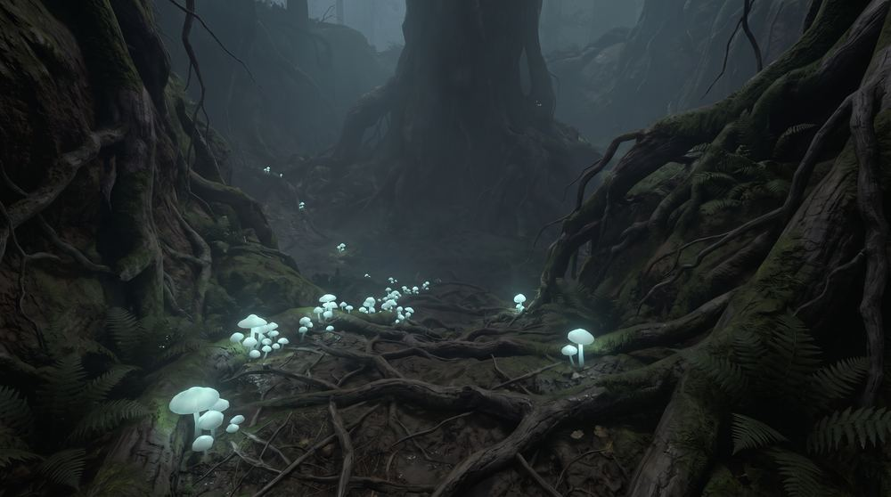
Candidate 2
HCHOSEN
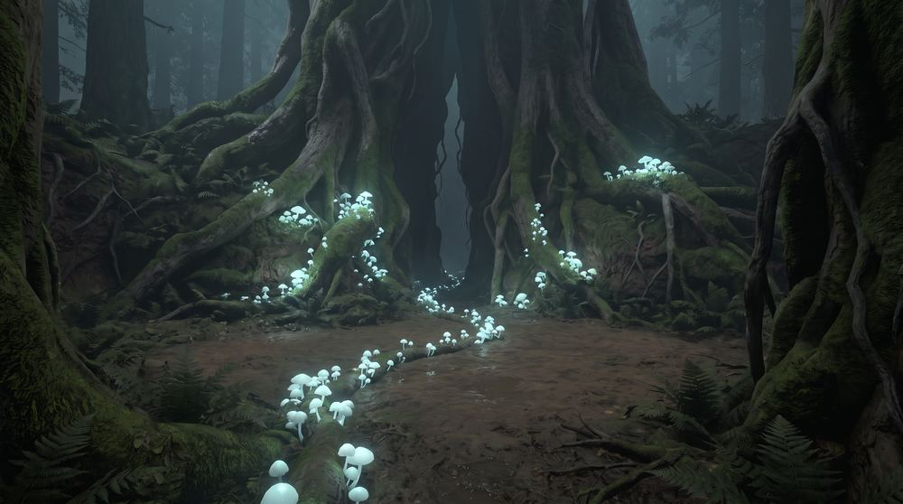
Candidate 3 — Gigantic tree/root structure with a tall dark opening
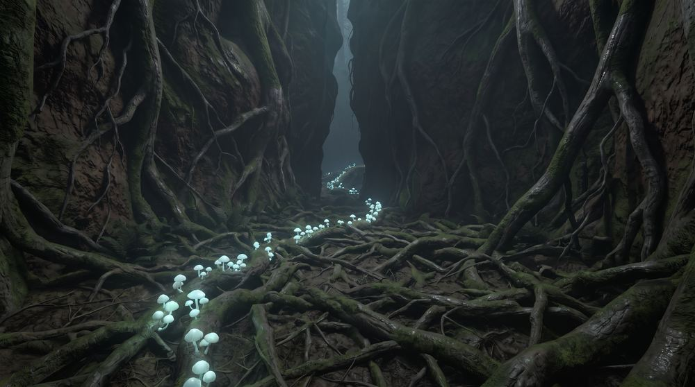
Candidate 4
Selected: Gigantic tree/root structure with a tall dark opening The mushrooms converged toward a destination the system invented for itself. It felt like arrival somewhere new while leaving the journey unresolved.
MORE LIKE THIS · AESTHETIC SIGNAL
Monumental root architecture, dramatic scale, a clear visual destination, and unresolved mystery — the strongest expression of the evolved world.
PROMPT EVOLUTION
Keep the stable traversal template and change only the scene-specific route. The reference image increasingly does the aesthetic prompting.
PROMPT / LOGIC CHANGE
We stopped still-image exploration here. The next experiment is generating and evaluating motion between the selected canonical frames.
CANONICAL JOURNEY
A → B → C → D → E → F → G → H
The selected still-frame journey, shown as a compact filmstrip. Only frames chosen into the continuing journey appear here.
ABCDEFGH
SEQUENCE-LEVEL REVIEW
The reel exposed a failure we missed while judging frames one at a time.
Clicking through the canonical journey changed the diagnosis. Several selected frames preserved the world and advanced its aesthetic, but did not convincingly encode a new camera position. The environment evolved while the viewpoint stayed nearly stationary.
B → C
Feels less like forward travel than a re-dressing of the same viewpoint: more roots and enclosure, but little unmistakable camera displacement.
D → E
The world becomes more ominous and architectural, but the camera again appears to remain in nearly the same place.
F → G
The scene changes dramatically, yet the new geography can read as transformation around a stationary camera rather than a location reached by traversal.
New Director criterion: perceptible camera displacement
A candidate should not count as spatial advancement merely because the scene is different. It should provide visual evidence that the camera itself moved: foreground landmarks passed behind it, occlusion relationships changed, perspective/parallax shifted, or genuinely new geography became visible.
The reel therefore becomes more than presentation. A TunnelVision agent can keep the growing canonical sequence as working visual memory, periodically re-evaluate local transitions and the global trajectory, and repair frames that preserve style but fail to communicate movement.